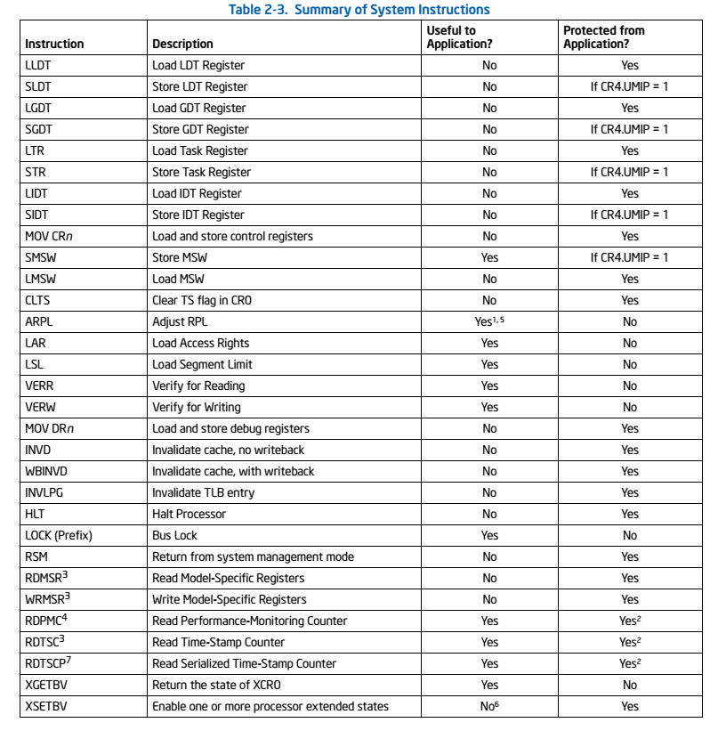

课程内容概述
这节课的主要内容包括：
- 对8个实验内容的更详细的介绍
- 对X86-32硬件的介绍
- uCore的部分编程技巧和数据结构
- 如何使用工具编写和调试实验
实验具体内容
我认为在此处把实验具体内容再列举一遍毫无意义。所以我给出了我自己对这些实验的意义的一个总结：
- 0：实验环境准备
- 配置环境：安装适当的库、应用或直接下载虚拟机
- 我认为此时应该尝试编译一下答案，避免出现QEMU no output的情况
- 环境出问题时，不外乎就是
make clean和重装两种解决方式
- 1：系统启动及中断
- 这个实验主要是了解操作系统加载到内存，开始运行和处理中断的过程
- 大部分都是看和总结
- 有少量编程，但与硬件相关性极强，很难独立做出来
- 2：物理内存管理
- 实现了一个管理空闲内存的算法，就是把一大块内存分页，然后按需求进行分配和释放
- 3：虚拟内存管理
- 实现了虚拟内存管理，也就是PDE->PTE->Page的映射
- 实现了页替换算法，需要进行换入和换出
- 代码开始变得非常复杂
- 4：内核线程管理
- 建立了一些新的内核线程
- 除了每个线程新建了一个内核栈之外，其实没有怎么用到虚拟内存管理，因为内核线程共用OS本身的内存管理结构
- 初步涉及了进程调度的概念
- 进程的切换是难点，不同特权级之间进程的切换是超难点（虽然此时还不需要）
- 细节很复杂
- 5：用户进程管理
- 建立了用户线程，终于用到了特权级切换和虚拟内存管理
- 把用户进程的程序内容加载到虚拟空间中是一个难点；此时由于还没有文件系统，程序内容的位置是链接时生成的变量，在程序中直接使用
- 系统调用的实现过程与特权级很相关
- 程序的状态开始有了更多的意义；僵尸态、等待态、就绪态、执行态都出现了
- 仍然只是初步涉及了进程调度的概念
- 测试时有一些很坑爹的细节，比如需要修改lab1中的一些代码
- 6：CPU调度
- 终于开始写调度算法了
- 过于水的一次lab，除了调度算法之外似乎什么都没有
- 7：同步与互斥
- 难度突然上升的一次lab
- 需要先了解信号量和条件变量
- 利用信号量实现一个没有什么用处的哲学家就餐问题
- 利用信号量实现条件变量
- 利用管程机制再把完全没有什么用处的哲学家就餐问题实现一遍
- 总之这是一次注重理解的lab
- 8：文件系统
- 代码量和难度再次直线上升！
- 首先理解uCore中文件系统的实现方法（细节十分多！特别多！巨多！代码巨多！）
- 然后尝试填写文件系统中某个层次的读文件的代码（反正我写不出来）
- 修正用户进程加载程序内容的方法，改为从文件系统加载
- 代码全都写不出来！！
X86-32硬件简单介绍
这个时候就应该参见之前认真写的那篇文章了（Intel80X86架构概述）。这一讲中并未讲得太细，大致概括如下：
- 运行模式
- 80386共有四种运行模式，我们只用到了其中两种
- 实模式：加电后的默认模式，在bootloader中就会切换为保护模式
- 保护模式：一般的模式
- 寻址方法（参见Intel80X86架构：保护模式下的内存管理）
- 逻辑地址：由16位的段选择子和32位的偏移量组成，是应用程序直接使用的地址空间（大概就是程序运行时访问的地址吧）
- 线性地址：由逻辑地址的偏移量+段基址得到，是虚存管理下每个运行的应用程序能访问的地址空间
- 物理地址：处理器提交到总线上用于访问计算机系统中内存和外设的最终地址。如果未开启页机制，则物理地址=线性地址；否则通过页表和线性地址可得到物理地址
- 寄存器
- 通用寄存器
- EAX：累加器
- EBX：基址寄存器
- ECX：计数器
- EDX：数据寄存器
- ESI：源地址指针寄存器
- EDI：目的地址指针寄存器
- EBP：基址指针寄存器
- ESP：堆栈指针寄存器
- 段寄存器
- CS：代码段（Code Segment）
- DS：数据段（Data Segment）
- ES：附加数据段（Extra Segment）
- SS：堆栈段（Stack Segment）
- FS：附加段
- GS：附加段
- 指令寄存器EIP：指令的段内偏移地址
- 标志寄存器EFLAGS：
- TF：开启单步调试
- IF：开启硬件中断
- IOPL：I/O特权级，CPL<=IOPL时才能进行I/O操作
- 通用寄存器
uCore的部分编程技巧和数据结构
主要就讲了两个东西：函数指针和链表。
函数指针
大家都知道，uCore是用C写的。但是C也是可以写出面向对象代码的。就比如说swap_manager，我们只定义了一个swap_manager类型的结构体变量，它的成员变量全是函数指针。然后，我们可以定义各种各样的成员函数，比如__fifo_swap_out_victim，把函数的值赋给成员变量。需要进行换入换出的时候，就调用这个函数指针。正因为如此，把__fifo_swap_out_victim换成__clock_swap_out_victim之类也是可以的。
链表
uCore中有大量的东西都是用双向链表实现的，比如空闲内存块链表、内存中页面链表、状态队列……
uCore的双向链表的定义是这样的：
1 | struct list_entry { |
对于每个数据结构，每有一种它需要连接到里面的链表（后期struct Page结构就有至少两个list_entry类型的成员变量，一个用来进行空闲页管理，一个用来辅助页替换算法），就在里面多加一个list_entry项，然后把这些list_entry连接起来。一般来说，每个有实际用途的双向链表的逻辑都是，有一个不是其他变量的成员变量的head指针，每次可以从它开始访问，直到绕了一圈回来为止（因为是双向链表）。
uCore提供了用于管理链表的宏，不需要自己手动管理，总的来说挺好用的：
list_init：初始化一个双向链表list_add和list_add_before：在某链表项前或后插入一个新的项list_next和list_prev：向前或后移动一个链表项list_del：从链表中删除某个项
另一个关键问题是如何通过链表项指针访问对应的结构体变量（从结构体变量访问成员链表项的方法是显然的）。uCore提供了le2page宏，可以通过计算结构体变量开头的地址访问这个变量。总的来说特别好用。
编写和调试工具
全部都用文本编辑器来写代码、看代码当然没有什么问题。用eclipse-CDT建立Makefile项目再看的话，在函数之间跳转比较方便。在eclipse中配置调试是可以的，不过我一般都直接用命令行调试了。
至于从之前的实验中移植代码到后面的实验中这个问题……由于有的时候代码还需要修改，所以所有的代码我都是手动粘的。当然这也是因为我用不惯diff和meld工具。
习题
选择填空题
清华大学目前的操作系统实验中采用的OS对象是()
- Linux
- ucore
- xv6
- Nachos
是参考了xv6, OS161, Linux的教学操作系统ucore OS。
在ucore lab的实验环境搭建中，使用的非开源软件是()
- eclipse CDT
- Scitools Understand
- gcc
- qemu
Scitools Understand是非开源软件，主要可以用于分析代码，可免费试用一段时间。
在ucore lab的实验环境搭建中，用来模拟一台PC机（即基于Intel 80386 CPU的计算机）的软件是()
- apt
- git
- meld
- qemu
qemu是一个支持模拟多种CPU的模拟软件。apt是Unix系统的软件包管理器，git是版本管理工具，meld是文本比较工具。
ucore lab实验中8个实验是否可以不按顺序完成？
- 是
- 否
每个实验i依赖前面所有的实验(0～i-1)，即完成了lab i，才能完成lab i+1。
ucore lab实验中在C语言中采用了面向对象的编程思想，包括函指针表和通用链表结构。是否正确？
- 是
- 否
是的，这使得可编出更加灵活的操作系统功能模块和数据结构。当然，这也不是严格的面向对象，不过至少是模块化的，而且能用。
x86-32 CPU（即80386）有多种运行模式，ucore lab中碰到和需要处理哪些模式？
- 实模式
- 保护模式
- SMM模式
- 虚拟8086模式
ucore需要碰到和处理16位的实模式和32位的保护模式。其中保护模式的重要性大得多。
简答题
你理解的对于类似ucore这样需要进程/虚存/文件系统的操作系统，在硬件设计上至少需要有哪些直接的支持？至少应该提供哪些功能的特权指令？
进程的切换需要硬件支持时钟中断；虚存管理需要地址映射机制，从而需要MMU等硬件；对于文件系统，需要硬件有稳定的存储介质来保证操作系统的持久性。 对应的，应当提供中断使能，触发软中断等中断相关的，设置内存寻址模式，设置页表等内存管理相关的，执行I/O操作等文件系统相关的特权指令。
对于现代操作系统（每个进程占一个时间片）时钟中断是非常需要的。存储介质当然也是非常必要的。当然，事实上，MMU没有也行，可以用用户态函数库来实现地址转换，但这样可能就保证不了安全性了。
Intel手册第3卷2.8节“System Instruction Summary”中给出了一个系统指令列表。“系统指令完成的是系统级的功能，包括加载系统寄存器、管理Cache、管理中断和设置调试寄存器。其中的大部分指令都必须由操作系统或特权级为0的进程执行；另一部分可以由任何特权级的进程执行。”

其中我们直接用到的不多。LGDT在建立段映射机制的时候用过，INVLPG在切换页表的时候大概用过，其他的就不知道了。
你理解的x86的实模式和保护模式有什么区别？物理地址、线性地址、逻辑地址的含义分别是什么？
保护模式和实模式的根本区别是进程内存是否受保护。（我的意见是，实模式既是一个历史包袱，又有一定的实际用途。在实模式下，BIOS自检和加载bootloader的程序可以尽可能简单，因为不需要建立复杂的段映射。但是段机制必须开启这一点也是历史包袱。总之，bootloader一开始就开了A20，设置了GDT然后长跳转切换到保护模式了。）实模式将整个物理内存看成分段的区域，程序代码和数据位于不同区域，系统程序和用户程序没有区别对待，而且每一个指针都是指向“实在”的物理地址。这样一来，用户程序的一个指针如果指向了系统程序区域或其他用户程序区域，并改变了值，那么对于这个被修改的系统程序或用户程序，其后果就很可能是灾难性的。为了克服这种低劣的内存管理方式，处理器厂商开发出保护模式。这样，物理内存地址不能直接被程序访问，程序内部的地址（虚拟地址）要由操作系统转化为物理地址去访问，程序对此一无所知。
物理地址：是处理器提交到总线上用于访问计算机系统中的内存和外设的最终地址。
逻辑地址：在有地址变换功能的计算机中，访问指令给出的地址叫逻辑地址。（一般的定义是段选择子+段内偏移量是逻辑地址。大概）
线性地址：线性地址是逻辑地址到物理地址变换之间的中间层，是处理器通过段(Segment)机制控制下的形成的地址空间。
虚拟地址（不得不补上）：对这个名称的定义总是模糊不清。不过，在这门课中，似乎虚拟地址就是程序内存的地址，不知道我的理解是不是错了。
理解list_entry双向链表数据结构及其4个基本操作函数和ucore中一些基于它的代码实现（此题不用填写内容）
我感觉刚才已经说得很多了。uCore中没有多么复杂的数据结构，也就只有数组和链表了。list_entry的确可以当做一个对象来看待，它可以作为其他对象的一部分，并且进行自己独立的操作。
对于如下的代码段，请说明":"后面的数字是什么含义。
1 | /* Gate descriptors for interrupts and traps */ |
“:”后的数字表示每一个域在结构体中所占的位数，详细说明见Bit field。总的来说就是把struct的变量定义精确到了bit的程度。这个结构体是IDT中的门描述符，一个门描述符的大小为8字节。
对于如下的代码段，
1 | #define SETGATE(gate, istrap, sel, off, dpl) { \ |
如果在其他代码段中有如下语句，
1 | unsigned intr; |
请问执行上述指令后， intr的值是多少？
在实验1中这个宏在填充IDT表中还是挺好用的。显然可以逐步计算出intr。事实上，这个填充过程应该是直接把intr的地址当成了一个gatedesc的地址，从代码中也可以看出来。之后事实上又把这个gatedesccast成了unsigned类型，也就是输出了它的前半部分（因为unsigned的长度为4个字节）。
gd_off_15_0 = 3 & 0xffff = 0x0003gd_ss = sel = 0x0002gd_args = b00000gd_rsv1 = b000gd_type = STS_TG32 = 0xfgd_s = b0gd_dpl = b00gd_p = b1gd_off_31_16 = 0x0000
可以得到这个内存中的gatedesc为：0x0003000200f10000。我也不知道为什么输出就变成了0x20003。这之中肯定有大小端的问题。
参考答案中给出了一个可以直接输出的参考代码：
1 | #include <stdio.h> |
输出结果为0x20003，若将SETGATE(gate, 1, 2, 3, 0)改为SETGATE(gate, 0, 1, 2, 3)，则结果为0x10002。
实践练习
请在ucore中找一段你认为难度适当的AT&T格式X86汇编代码，尝试解释其含义。
那就找一下后期的用于切换上下文的switch.S。把当前寄存器保存在struct context from中，再从struct context to中恢复寄存器。
1 | struct context { |
这段代码其实很简单。核心问题是栈如何被操纵。开始时，栈顶是返回地址，下面（esp-4）是from（因为参数是从右往左压栈的），再下面是to。系统先从栈中取出from，然后把该函数的返回地址弹出，保存到from->eip中。然后依次保存各个通用寄存器（段寄存器不需要保存，因为内核线程之间这些寄存器都一样）。因为eax中保存的总是返回值，所以可以不保存它，简化代码。之后就是从栈中再取出to，恢复通用寄存器，最后把to->eip入栈，保证返回之后能跳转到正确地址。
1 | .text |
宏定义和引用在内核代码中很常用。请枚举ucore中宏定义的用途，并举例描述其含义。
参考答案给出了3点：
- 利用宏进行复杂数据结构中的数据访问；
- 利用宏进行数据类型转换；如
to_struct - 常用功能的代码片段优化；如
ROUNDDOWN,SetPageDirty
我觉得很有道理。因为现在手边没有代码，所以就不粘贴了，反正不是重点。